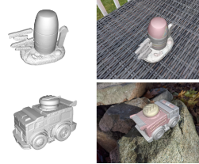

Hello! I am a Research Scientist at Google Research, working on 3D computer vision.. Previously, I obtained my PhD at the Computer Vision Lab of ETH Zürich, where I worked with Prof. Luc Van Gool and Dr. Jordi Pont-Tuset on 2D scene understanding. I received my M.Eng degree from National Technical University of Athens, School of Electrical and Computer Engineering. I was a member of the CVSP lab working on human action recognition in videos with Prof. Petros Maragos. I have interned in Facebook AI Research (FAIR), where I worked on multi-task learning with Prof. Iasonas Kokkinos. This personal web-page will be updated with my research work.
Publications
Conference/Journal Publications
|  |
V. Jampani*,
K.-K. Maninis*,
A. Engelhardt,
A. Karpur,
K. Truong,
K. Sargent,
S. Popov,
A. Araujo,
R. Martin-Brualla,
K. Patel,
D. Vlasic,
V. Ferrari,
A. Makadia,
C. Liu,
Y. Li, and
H. Zhou |
|
D. Rozumnyi,
S. Popov,
K.K. Maninis,
M. Niessner, and
V. Ferrari
|
@InProceedings{rozumnyi23neurips,
Author = {Denys Rozumnyi and Stefan Popov and Kevis-Kokitsi Maninis and Matthias Niessner and Vittorio Ferrari},
Title = {Estimating Generic 3D Room Structures from 2D Annotations},
BookTitle = {Conference on Neural Information Processing Systems (NeurIPS)},
Year = {2023}
}
@InProceedings{maninis23iccv,
Author = {Kevis-Kokitsi Maninis and Stefan Popov and Matthias Niessner and Vittorio Ferrari},
Title = {CAD-Estate: Large-scale CAD Model Annotation in RGB Videos},
BookTitle = {International Conference on Computer Vision (ICCV)},
Year = {2023}
}
|
K.K. Maninis,
S. Popov,
M.
Niessner, and
V. Ferrari
|
@InProceedings{maninis23iccv,
Author = {Kevis-Kokitsi Maninis and Stefan Popov and Matthias Niessner and Vittorio Ferrari},
Title = {CAD-Estate: Large-scale CAD Model Annotation in RGB Videos},
BookTitle = {International Conference on Computer Vision (ICCV)},
Year = {2023}
}
|
Michał J. Tyszkiewicz,
K.K. Maninis,
S. Popov, and
V. Ferrari
|
@InProceedings{tyszkiewicz22eccv,
Author = {Michał J. Tyszkiewicz and Kevis-Kokitsi Maninis and Stefan Popov and Vittorio Ferrari},
Title = {RayTran: 3D pose estimation and shape reconstruction of multiple objects from videos with ray-traced transformers},
BookTitle = {European Conference on Computer Vision (ECCV)},
Year = {2022}
}
|
K.K. Maninis*,
S. Popov*,
M.
Niessner, and
V. Ferrari
|
@Article{maninis22pami,
Author = {Kevis-Kokitsi Maninis and Stefan Popov and Matthias Nießner and Vittorio Ferrari},
Title = {Vid2CAD: CAD Model Alignment using Multi-View Constraints from Videos},
Journal = {IEEE Transactions on Pattern Analysis and Machine Inttelligence},
Year = {2022}
}
 |
K.K. Maninis,
I. Radosavovic,
I. Kokkinos |
@InProceedings{MRK19,
Author = {Kevis-Kokitsi Maninis and Ilija Radosavovic and Iasonas Kokkinos},
Title = {Attentive Single-Tasking of Multiple Tasks},
Booktitle = {Computer Vision and Pattern Recognition (CVPR)},
Year = {2019}
}
 |
K.K. Maninis*,
S. Caelles*,
Y. Chen,
J. Pont-Tuset,
L. Leal-Taixé,
D. Cremers, and
L. Van Gool
|
@Article{Man+18b,
Author = {Kevis-Kokitsi Maninis and Sergi Caelles and Yuhua Chen and Jordi Pont-Tuset and Laura Leal-Taixé and Daniel Cremers and Luc Van Gool},
Title = {Video Object Segmentation Without Temporal Information},
Journal = {IEEE Transactions on Pattern Analysis and Machine Intelligence (TPAMI)},
Year = {2018}
}
 |
T. Probst*,
K.K. Maninis*,
A. Chhatkuli,
M. Ourak,
E. Vander Poorten, and
L. Van Gool
|
@Article{Pro+18,
Author = {Thomas Probst and Kevis-Kokitsi Maninis and Ajad Chhatkuli and Mouloud Ourak and Emmanuel Vander Poorten and Luc Van Gool},
Title = {Automatic Tool Landmark Detection for Stereo Vision in Robot-Assisted Retinal Surgery},
Journal = {Robotics and Automation Letters (RA-L)},
Year = {2018}
}
 |
K.K. Maninis,
J. Pont-Tuset,
P. Arbeláez, and
L. Van Gool
|
@Article{Man+18a,
Author = {Kevis-Kokitsi Maninis and Jordi Pont-Tuset and Pablo Arbel\'{a}ez and Luc Van Gool},
Title = {Convolutional Oriented Boundaries: From Image Segmentation to High-Level Tasks},
Journal = {IEEE Transactions on Pattern Analysis and Machine Intelligence (TPAMI)},
Year = {2018},
Volume = {40},
Number = {4},
Pages = {819 - 833}
}
 |
K.K. Maninis*,
S. Caelles*,
J. Pont-Tuset, and
L. Van Gool
|
@InProceedings{Man+18,
Author = {Kevis-Kokitsi Maninis and Sergi Caelles and Jordi Pont-Tuset and Luc Van Gool},
Title = {Deep Extreme Cut: From Extreme Points to Object Segmentation},
Booktitle = {Computer Vision and Pattern Recognition (CVPR)},
Year = {2018}
}|
C. Ventura,
J. Pont-Tuset,
S. Caelles,
K.K. Maninis, and
L. Van Gool
|
@InProceedings{Ven+18,
Author = {Carles Ventura and Jordi Pont-Tuset and Sergi Caelles and Kevis-Kokitsi Maninis and Luc Van Gool},
Title = {Iterative Deep Learning for Road Topology Extraction},
Booktitle = {British Machine Vision Conference (BMVC)},
Year = {2018}
} |
S. Caelles*,
K.K. Maninis*,
J. Pont-Tuset,
L. Leal-Taixé,
D. Cremers, and
L. Van Gool
|
@InProceedings{Cae+17,
Author = {Sergi Caelles and Kevis-Kokitsi Maninis and Jordi Pont-Tuset and Laura Leal-Taix\'{e} and Daniel Cremers and Luc Van Gool},
Title = {One-Shot Video Object Segmentation},
Booktitle = {Computer Vision and Pattern Recognition (CVPR)},
Year = {2017}
}|
K.K. Maninis,
J. Pont-Tuset,
P. Arbeláez, and
L. Van Gool
|
@InProceedings{Man+16a,
Author = {Kevis-Kokitsi Maninis and Jordi Pont-Tuset and Pablo Arbel\'{a}ez and Luc Van Gool},
Title = {Convolutional Oriented Boundaries},
Booktitle = {European Conference on Computer Vision (ECCV)},
Year = {2016}
} |
K.K. Maninis,
J. Pont-Tuset,
P. Arbeláez, and
L. Van Gool
|
@InProceedings{Man+16,
Author = {Kevis-Kokitsi Maninis and Jordi Pont-Tuset and Pablo Arbel\'{a}ez and Luc Van Gool},
Title = {Deep Retinal Image Understanding},
Booktitle = {Medical Image Computing and Computer-Assisted Intervention (MICCAI)},
Year = {2016}
} |
G. Chalvatzaki,
G. Pavlakos,
K.K. Maninis,
X. Papageorgiou,
V. Pitsikalis,
C. Tzafestas, and
P. Maragos |
@InProceedings{Cha+14,
Author = {Georgia Chalvatzaki and Georgios Pavlakos and Kevis-Kokitsi Maninis and Xanthi Papageorgiou and Vassilis Pitsikalis and Costas Tzafestas, and Petros Maragos},
Title = {Towards an Intelligent Robotic Walker for Assisted Living using Multimodal Sensorial Data},
Booktitle = {4th International Conference on Wireless Mobile Communication and Healthcare (Mobihealth)},
Year = {2014}
}|
K.K. Maninis,
P. Koutras, and
P. Maragos |
@InProceedings{MKM14,
Author = {Kevis-Kokitsi Maninis and Petros Koutras and Petros Maragos},
Title = {Advances on Action Recognition in Videos Using an Interest Point Detector Based on Multiband Spatio-Temporal Enegies},
Booktitle = {IEEE International Conference on Image Processing (ICIP)},
Year = {2014}
}PhD Dissertation
|
K.K. Maninis,
Exploiting Low-Level Features for Higher-Level Scene Understanding |
@phdthesis{Man2019,
Author = {Kevis-Kokitsi Maninis},
Title = {Exploiting Low-Level Features for Higher-Level Scene Understanding},
School = {ETH Zürich},
Year = {2019}
}Other Publications
 |
S. Caelles,
A. Montes,
K.K. Maninis,
Y. Chen,
L. sPan Gool,
Federico Perazzi, and
J. Pont-Tuset |
@Article{Cae+18,
Author = {Sergi Caelles and Alberto Montes and Kevis-Kokitsi Maninis and Yuhua Chen and Luc Van Gool and Federico Perazzi and Jordi Pont-Tuset},
Title = {The 2018 DAVIS Challenge on Video Object Segmentation},
Journal = {arXiv:1803.00557},
Year = {2018}
} |
M. Bellver,
K.K. Maninis,
J. Pont-Tuset,
X. Giró-i-Nieto,
J. Torres, and
L. Van Gool
|
@InProceedings{Bel+17,
Author = {Miriam Bellver and Kevis-Kokitsi Maninis and Jordi Pont-Tuset and Xavier Giró-i-Nieto and ordi Torres and Luc Van Gool},
Title = {Detection-aided liver lesion segmentation using deep learning},
Booktitle = {NIPS Machine Learning for Health Workshops},
Year = {2017}
}Misc
I come from Skyros, a small island in the center of Aegean, in Greece. Skyros is popular for its ponies, its ceramics and its traditional carnival (video). Enjoy some beautiful photos in this page.